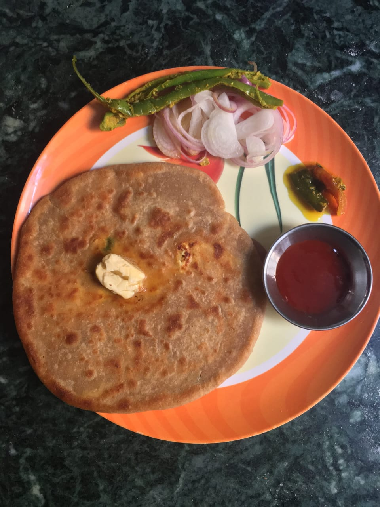

Paneer Paratha
Paneer paratha is a popular North Indian flatbread made with whole wheat
flour dough and stuffed with savory, spiced, grated paneer (Indian cottage
cheese) stuffing.
Paneer paratha is one of the most popular stuffed paratha varieties from
Punjab and usually made for breakfast.

INGREDIENTS
- For Paneer Parathas Dough
- Whole Wheat Flour - 3/4 cup
- Plain Flour - 3/4 cup
- Oil - 2 teaspoon
- Salt - 1/2 teaspoon
- For Paneer Paratha Stuff
- Grate Paneer - 1/2 cups
- Chopped Coriander (Chopped) - 2 tablespoon
- Green Chillies (Chopped) - 2 teaspoon
- Dried Mango Powder - 1/2 teaspoon
- Chilli Powder - 1/2 teaspoon
- Salt - 1/2 teaspoon
STEPS
-
Combine all the ingredients and knead into a soft, smooth dough using
enough water.
-
To make paneer parathas, divide the dough and stuffing into 5 equal
portions.
-
Roll out one portion of the dough into a circle of 74 mm diameter using
whole wheat flour for rolling.
-
Place one portion of the stuffing in the centre of the circle. Bring
together all the sides in the centre and seal tightly.
-
Roll out again into a circle of 124 mm in diameter, using whole wheat
flour for rolling.
-
Cook on a hot tava (griddle), using a little ghee, till both sides are
golden brown in colour.
-
Repeat the remaining dough and stuffing to make 4 more paneer parathas.
- Serve the paneer parathas hot with curds.
Back To Home Page